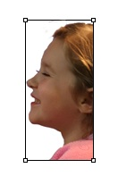

Designing The Continuous Profile® Toolpath

After capturing the 2-D image as described in the previous project, you have the basic information required to create a tool path for turning on a wood lathe. To create the pattern, transfer the electronic image to a personal computer and open the file in your favorite photo editor application. Resize the image to scale it to the proper width and height to produce a Continuous Profile® of the desired dimension. Although the original prototypes were 4” diameter, you should be able to scale your Continuous Profile® to a larger size depending on the capacity of the lathe and availability of turning stock.

Using the photo editor, electronically “cut” the image in half, saving the facial portion, which will be used to create the pattern. Using the “Free Rotate” feature found in most photo editors, you should adjust the profile orientation so that it is vertical.In order to complete the pattern, a base must be added to the bottom of the profile. This will take some creative use of your photo editor to design a base that fits with the look and feel of the Continuous Profile™. You may also need to adapt the neckline in order to integrate the base. If necessary, resize the pattern to conform to the desired dimensions of the finished Continuous Profile®. Since my turning square is 4” x 4”, I set the width to 2”, which is the radius of the finished turning at the widest point. The photo editor should scale the height to keep the pattern proportional.
Print the 2D image on regular paper stock and cut a rectangular section around the pattern. There is no need to cut the detail of the profile, since this will occur in the next step.
Using a bandsaw, cut a rectangular piece of 1/4” Plexiglas, adding 1” to the width and 1” to the height of the pattern. This will provide extra surface for mounting in the lathe duplicator.
The paper pattern is adhered to the Plexiglas using rubber cement. Using a fine tooth on your bandsaw, cut as close to the facial profile as possible. Since the blade tends to travel, I prefer to leave a small amount and cleanup the pattern using a small bench belt sander. It is important to capture the profile accurately in the resulting pattern, since this is the tool path that will be represented in the finished object after turning on the lathe.
Copyright © 2012 - 2014 The Continuous Profile LLC